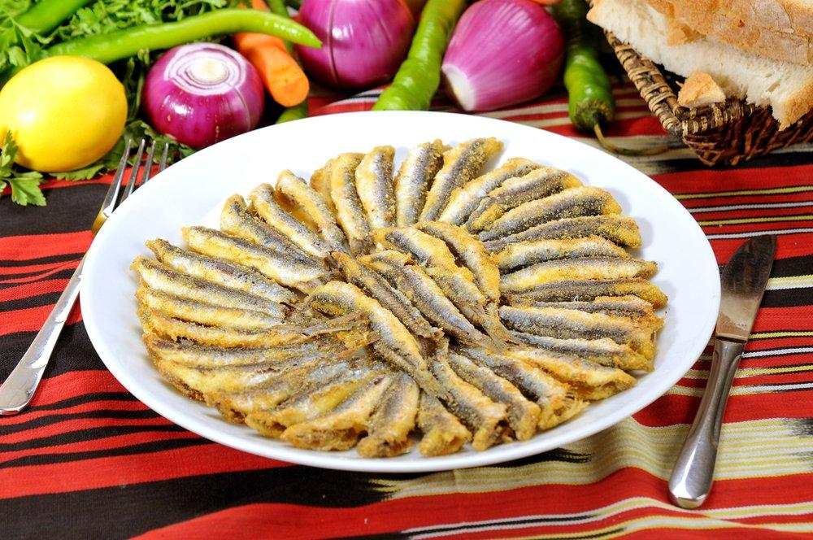
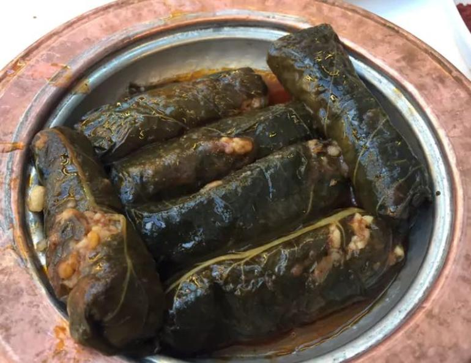
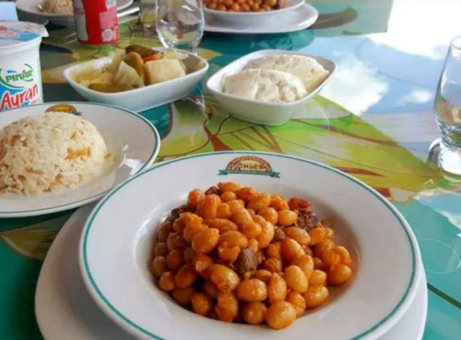
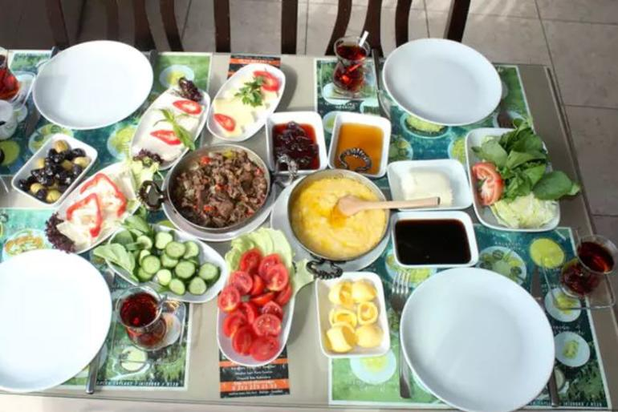
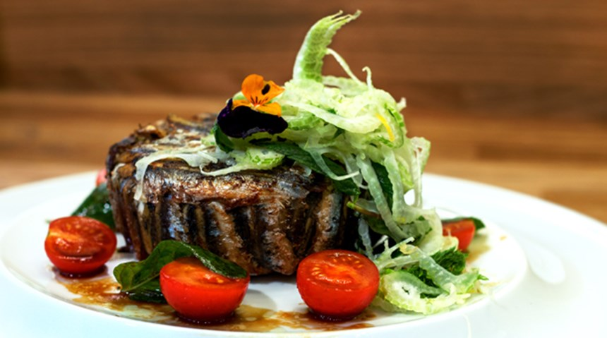
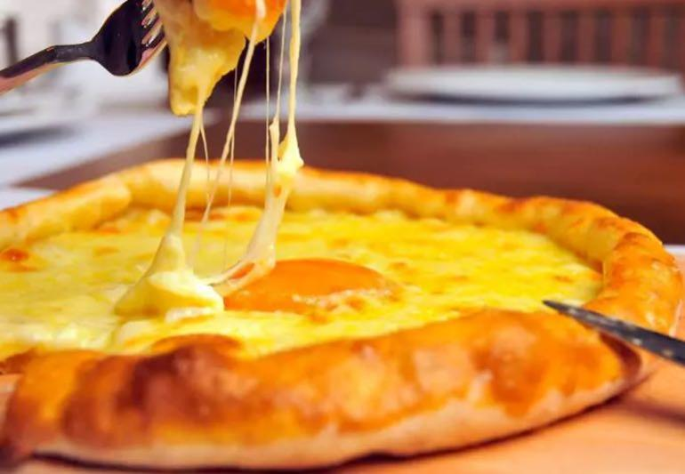
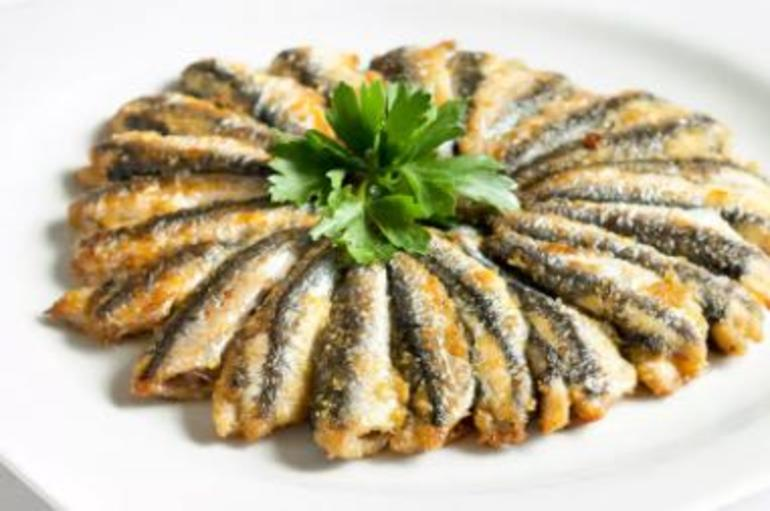
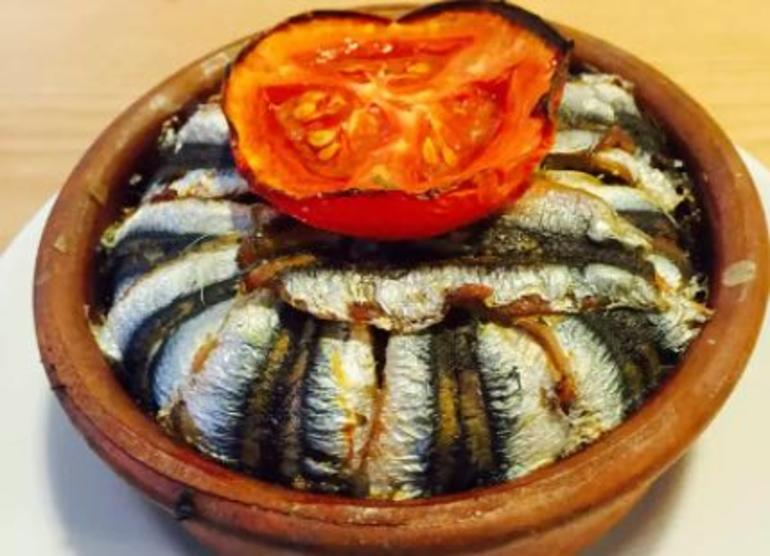

Karadeniz mutfağının en iyi 10 temsilcisi

Hiç şüphesiz Türk mutfağının zengin mutfaklar arasında yer almasının en büyük nedenlerinden biri, Karadeniz’in dillere destan yemekleriyle kültürümüze kattığı lezzetler. Peki bu lezzetleri tatmak için illa ufak bir Karadeniz turuna mı çıkmamız lazım dersiniz? Tabii ki hayır! İşte karşınızda İstanbul’un en iyi Karadeniz mutfağı temsilcisi restoranları.Cemilusta Akçaabat Köftecisi:

Maltepe’de hizmet veren ve menüsünde etli lahana sarmasından nefis köy tereyağlı mercimek çorbasına, Akçaabat köfteden turşu kavurmaya kadar pek çok Karadeniz lezzetini barıntıdan Cemil Usta, İstanbul’un en popülerlerinden biri.
Çömlek Kurufasulye:

Çamlıca’da, İstanbul’u ayaklarınızın altına serecek manzarası ve ferah alanıyla hizmet veren Çömlek, güveçte etli kuru fasulyesiyle ünlü. Mekan menüsünde Laz böreğinden hamsili pilava, muhlamadan kara lahana çorbasına kadar birçok Karadeniz yemeğini bulunduruyor.
Anzer Sofrası:

Kahvaltı sizin için vazgeçilmez bir öğünse ve özellikle yöresel kahvaltıları deneyimlemeyi seviyorsanız, Anzer Sofrası’nda eşsiz bir Karadeniz kahvaltısı bulacağınızı unutmayın! Muhlamadan Rize kavurmasına kadar pek çok lezzeti bulunduran kahvaltı sofralarıyla beraber, ispir kuru fasulye ve etli lahana sarması gibi özel lezzetleri de bulabilirsiniz.
Klemuri:

Beyoğlu’nda hizmet veren ve yemekleriyle olduğu kadar konseptiyle de beğenilen Klemuri de İstanbul’un popüler Karadenizlilerinden biri. Laz böreği, silor, muhlama gibi Karadeniz yöresinin en lezzetlilerini menüsünde bulunduruyor.
Lazİstanbul:

Kadıköy’de hizmet veren ve geniş menüsünde Karadeniz mutfağının hemen hemen tüm lezzetlerini sunan Laz İstanbul’un en meşhur lezzeti, kuru fasulye ve pilav. Ayrıca Karadeniz pidesi çeşitlerinin de pek çoğunu bulabilirsiniz.
Nalia:

Hayvore:

Taksim’in ara sokaklarından birinde olmasına rağmen özellikle öğle saatlerinde tıka basa dolu olan Hayvore’nin müdavimi çok! Karadeniz mutfağının birçok lezzetini menüsünde barındıran mekanda geniş bir pide menüsü de bulunuyor.
Çay Tarlası Cafe:
Moda’da küçük ve salaş bir dükkanda hizmet veren Çay Tarlası, Karadeniz kahvaltısı için ideal adreslerden biri. Mekan menüsünde muhlama, laz böreği ve minci tavalama gibi özel lezzetleri barındırıyor.
Karpi:
Beylerbeyi’nde hizmet veren Karpi, Karadeniz mutfağı hayranlarının muhakkak listesine eklemesi gereken mekanlardan biri. Mekan menüsünde Akçaabat köftesinden muhlamaya, Karadeniz pide çeşitlerinden kara lahana sarmasına kadar birçok lezzeti barındırıyor.
Fasuli Lokantaları:

Karaköy’de geniş bir mekanda hizmet veren ve Karadeniz usulü kuru fasulyesiyle sevilen Fasuli’nin oldukça geniş bir menüsü var. Hemşin muhlamadan kara lahana sarmasına, turşu kavurmadan hamsi pilavına kadar pek çok lezzeti burada bulabilirsiniz.